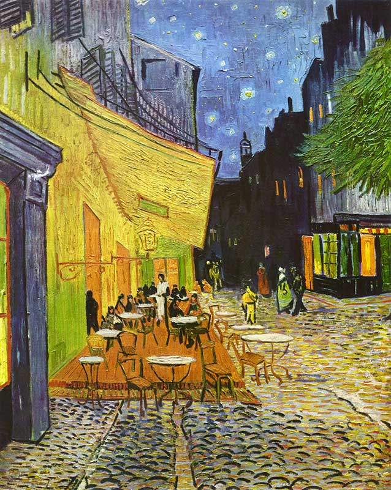
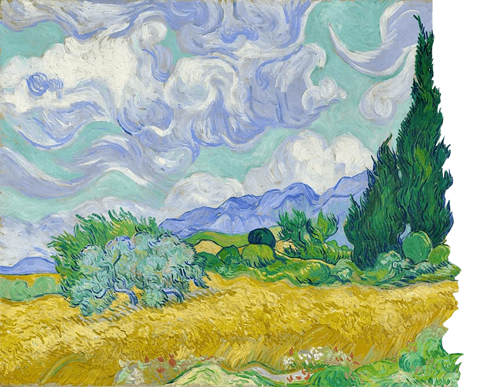
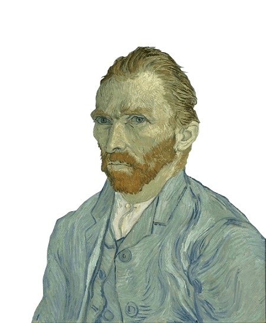
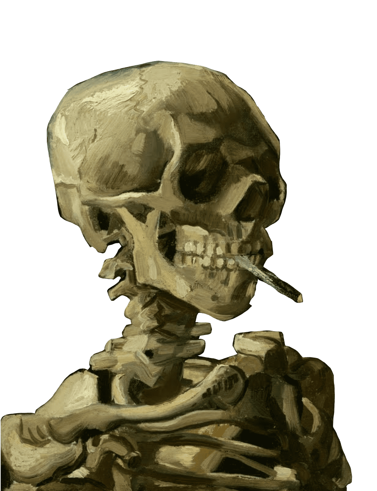

Self Portrait with Thorn Necklace
The Two Fridas
Self Portrait with Cropped Hair
Self Portrait on the borderline Between Mexico and The United States
Henry Ford Hospital
Family Tree
The Broken Column
The Bus
Self Portrait as a Tehuana
The Wounded Deer
insert
Click the buttons above to get to know more about the paintings.